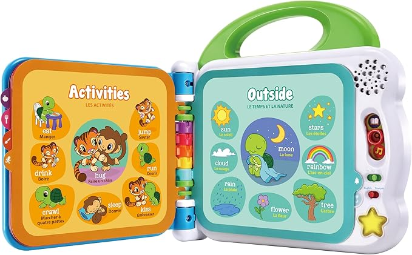
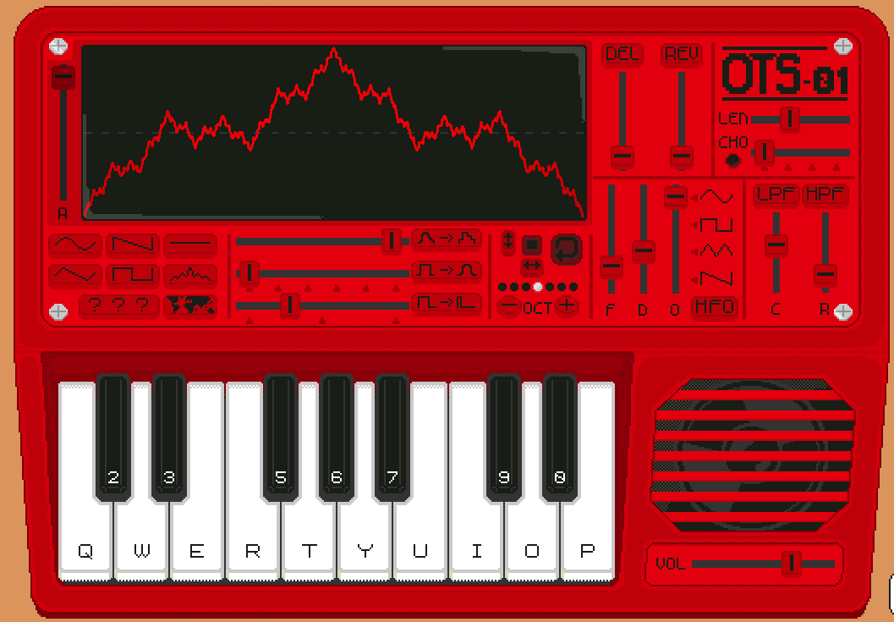
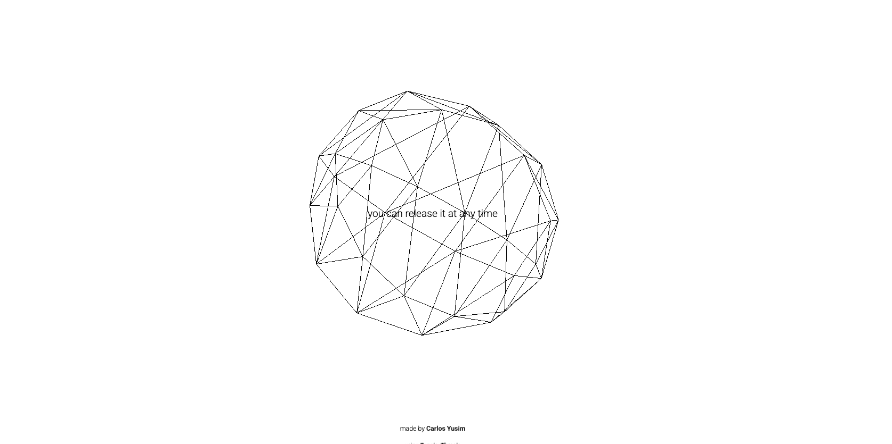
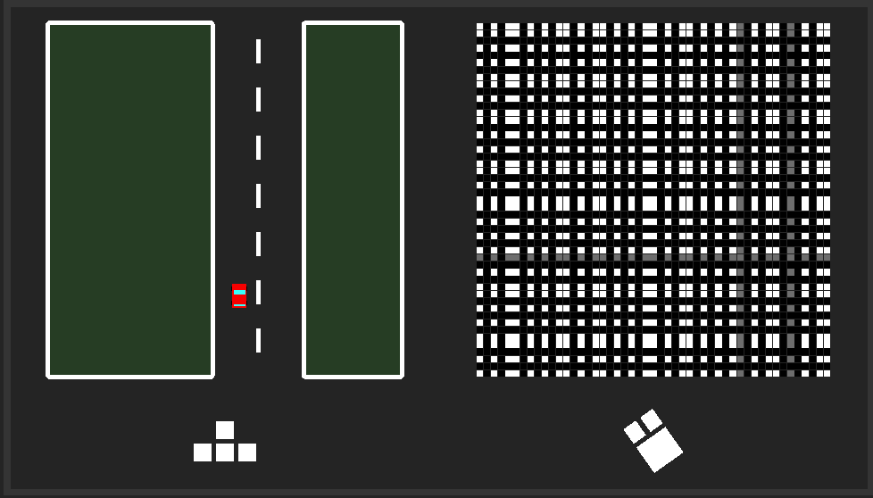
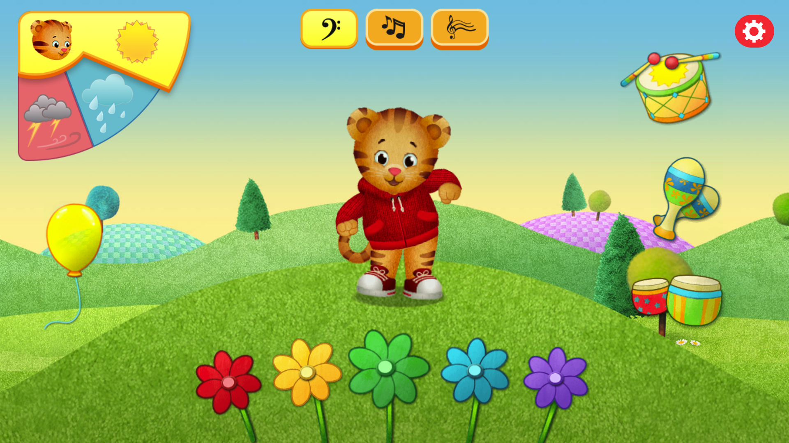

Scenario: Musical Toy for Toddlers
Prompt
Design a way for young children with minimal language skills to explore music.
Context
Browser-based musical instruments can allow users to perform and explore sound, but many use technical controls, musical terminology and complex visual information. These interactions can be difficult for young children whose language skills are still developing.
Dicussion
I interpret the main purpose of this scenario as allowing toddlers to explore music without needing written instructions, prior musical knowledge or an understanding of traditional synthesiser controls. The interaction should be simple and direct, allowing children to understand the relationship between their actions and the sounds they hear.
The main values I want the instrument to embody are playfulness, curiosity and accessibility. It should feel more like a toy than a technical music tool and allow children to freely experiment without feeling that there is a correct or incorrect way to interact. Immediate visual and audio feedback will also help make the interaction easier to understand.
Project Overview
Synopsis
I propose a browser-based musical toy presented as a simple, colourful garden environment. The interface will contain a small number of large and recognisable objects, such as flowers, butterflies and birds.
Children will be able to click these objects to trigger short musical sounds and simple animations. Each object will produce a consistent sound so the relationship between action and response remains predictable.
The instrument will also use Spatial Input as its extended technique. Holding the mouse button while moving horizontally will change pitch, while vertical movement will control volume.
Response to Purpose and Worth
The project responds to the scenario by replacing complex controls and text-heavy instructions with simple mouse interactions and large visual objects.
Playfulness will be supported through the colourful garden environment, sounds and animations. Curiosity will be encouraged by allowing children to freely explore different objects and discover their responses. Accessibility will be supported by minimising written instructions, reducing the number of controls and providing immediate audio-visual feedback.
The garden setting also frames the interface as an environment to explore rather than a technical synthesiser to operate. There will be no score, failure state or required musical outcome, allowing children to experiment freely.
Framing
A key influence on this project is the interaction design of children's touch-and-sound books. These toys allow children to press familiar pictures and immediately hear a matching sound. This creates a simple and predictable cause-and-effect relationship without requiring complex instructions. I want to bring a similar interaction logic into the browser by using large, recognisable visual objects that respond immediately with sound and animation.

The project will focus on play and exploration, cause and effect, non-verbal interaction and immediate feedback. Children should be able to understand the interface through recognition and experimentation rather than technical labels or written instructions.
The characterisation will be friendly, magical, colourful, soft and playful. The interface will use large shapes, gentle animation and a limited number of interactive elements to avoid making the screen feel too complex or overwhelming.
Instead of turning pages or pressing physical buttons, the browser interface will use clicking, holding and mouse movement. Familiar objects such as flowers, butterflies and birds will act as interactive elements. Clicking an object will produce a short and predictable sound with simple visual feedback.
The main extended technique will be Spatial Input using the mousemove event. When the mouse button is held down, horizontal movement will control pitch and vertical movement will control volume. This allows children to explore sound through movement instead of using traditional synthesiser controls such as sliders or knobs.
Interaction design analysis
Example 1: OTS-01

I chose to analyse OTS-01 because it combines a familiar piano keyboard with more technical synthesiser controls. This makes it useful for comparing which types of interaction are easy to understand and which may be more difficult for users with limited musical knowledge.
When I first opened OTS-01, I immediately understood that I could press the piano keys to produce sound. The keyboard was familiar and easy to recognise, so the main interaction felt clear and intuitive.
However, I found the sliders, waveform graphics and other controls above the keyboard more difficult to understand. As someone with limited musical knowledge, I was not immediately sure what these controls were for or how they would affect the sound. This made the upper section feel more technical and complex.
This influenced my project to use large and recognisable interactive elements with immediate sound feedback, while avoiding small sliders, waveform displays and technical musical controls. OTS-01 showed me that familiar visual elements can improve discoverability, while unfamiliar controls can make the interface harder to understand. For toddlers with limited language skills, the interface should make possible interactions obvious without requiring prior musical knowledge.
Example 2: Holdspace

I chose to analyse Holdspace because it uses a very simple continuous interaction and connects that interaction with immediate sound and visual feedback. This is relevant to my project because I want toddlers to be able to explore sound through simple actions rather than complex controls.
When I first opened Holdspace, I saw a short instruction telling me to turn up the volume and press and hold the spacebar. When I held the spacebar, music and geometric animations appeared immediately. When I released it, the visual movement appeared to reverse. This created a clear connection between my action and the audio-visual response.
The interaction was simple and easy to understand once I followed the instruction. However, the interface relies on written text to explain what the user should do, and the abstract geometric graphics do not clearly show what can be interacted with before the instruction is read.
This influenced my project to use continuous interaction together with immediate audio-visual feedback. However, instead of relying on written instructions or abstract shapes, I want to use familiar and recognisable objects so toddlers can understand possible interactions more easily through exploration.
Example 3: MusicMouse

I chose to analyse Music Mouse Game because it combines movement, sound and visual feedback in a single interaction. This is relevant to my project because I want children to understand the relationship between their actions and sound through direct interaction rather than technical musical controls.
I could understand the basic interaction quite quickly. The road, vehicle and simple visual layout made it clear that the vehicle was meant to move through the environment. As I interacted with the game, my actions affected the movement of the vehicle as well as the visual and audio feedback.
A key strength of the interface is its clear cause-and-effect relationship. Changes in movement are immediately supported by changes in both sound and visuals, making the result of the interaction noticeable. When the vehicle moves away from the intended path, both the sound and visual feedback change, helping the user understand what has happened without relying only on written instructions.
However, the interface also creates a stronger sense of success and failure because the player is expected to remain on the road. The combination of mouse and keyboard controls may also be more complicated for toddlers with limited motor skills.
This influenced my project to combine sound and visual feedback so that children can clearly understand the result of their actions. However, my project will avoid goal-based gameplay, failure states and complex control combinations. Instead, it will support open-ended exploration so children can interact freely without feeling that they have done something wrong.
Example : PBSkids Feel The Music

I chose to analyse Feel the Music because it is designed for young children and uses large, colourful and recognisable objects to support musical interaction. This is especially relevant to my project because I am also designing for children with limited language skills.
The interactive objects were easy to notice. The large instruments and colourful flowers clearly suggested that they could be clicked. When I clicked an object, it immediately produced a musical sound, and musical note graphics appeared as visual feedback.
A key strength of the interface is its clear and child-friendly interaction design. The user does not need to understand technical musical controls or read detailed instructions before interacting. The combination of recognisable objects, bright visuals, sound and animation makes the cause-and-effect relationship easy to understand.
This influenced my project to use large and familiar visual objects with immediate audio-visual feedback. Similar to Feel the Music, I want children to be able to understand what can be interacted with through recognition and exploration rather than written instructions or technical controls.